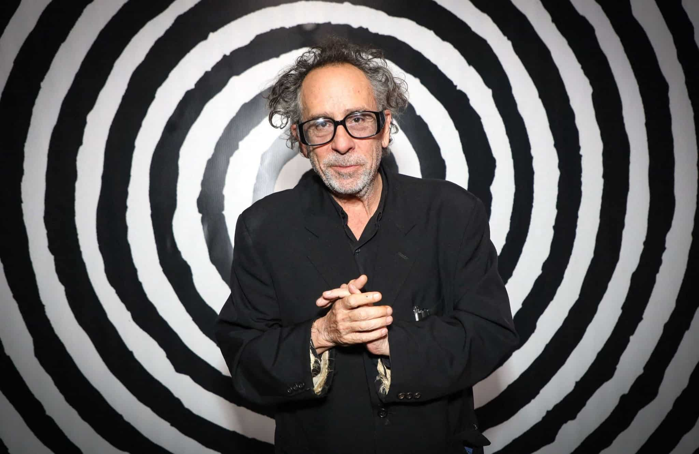
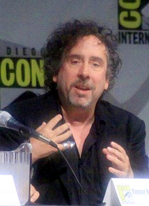
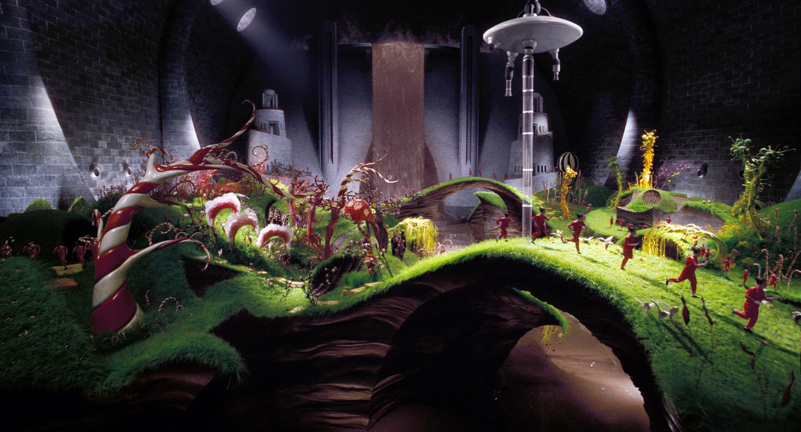
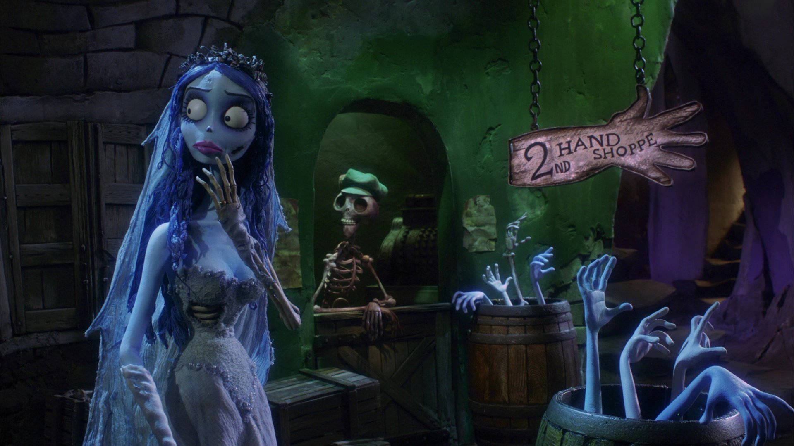

Tim Burton
August 25, 1958/ Burbank, California

Timothy Walter Burton (born August 25, 1958) is an American filmmaker, and former animator. He is known for pioneering goth subculture in Hollywood, with his films employing a distinctive style that blends gothic horror and dark fantasy aesthetics with whimsical and surreal elements. He has received numerous accolades, including one Emmy Award and nominations for two Academy Awards, a Golden Globe Award, and three BAFTA Awards. He was honored with the Venice International Film Festival's Golden Lion for Lifetime Achievement in 2007 and France's Order of Arts and Letters in 2010.
Early Life
Burton was an introspective person who found pleasure in artwork, drawing, painting, and watching movies. His future work would be heavily influenced by the books of such childhood heroes as Dr. Seuss and Roald Dahl and the aesthetics of silent gothic horror films, Universal Monsters films such as Frankenstein (to which he would continuously pay homage throughout his career), Hammer Horror films starring Christopher Lee, and the horror films of Vincent Price; the latter two would both later star in his films, with Price being honored in his short film Vincent (1982). In a Hollywood Reporter article, Burton said, "I grew up watching the Universal horror movies, Japanese monster movies, and pretty much any kind of monster movie. That was my genre." He also said that his love of Ray Harryhausen's work got him interested in stop-motion animation at a young age.
Exhibitions

From November 22, 2009, to April 26, 2010, Burton had a retrospective at the MoMA in New York with over 700 "drawings, paintings, photographs, storyboards, moving-image works, puppets, maquettes, costumes and cinematic ephemera", including many from the filmmaker's personal collection.[100] From MoMA, the "Tim Burton" exhibition traveled directly to Australian Centre for the Moving Image in Melbourne. Running from June 24 to October 10, 2010, the ACMI exhibition incorporated additional material from Burton's Alice in Wonderland, which was released in March 2010.
Notable Works
- Edward Scissorhands
- Big Fish
- Corpse Bride
- Sweeney Todd
- Charlie and the Chocolate Factory
- Ed Wood
- Dark Shadows
- Miss Peregrine's Home for Peculiar Children
- Alice in Wonderland
- Frankenweenie
Gallery

Edward Scissorhands

Charlie and the Chocolate Factory

Corpse Bride